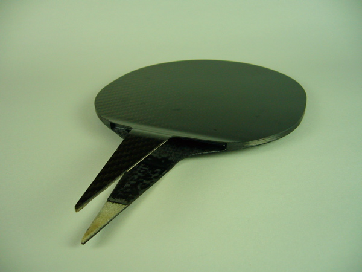

<--Previous Up Next-->

The white areas on the handle sections are slivers of Divinycell foam. Divinycell is a closed cell foam which has high compression strength, durability, and excellent fire resistance, handy for when the ping pong ball over heats and catches fire. Probably.